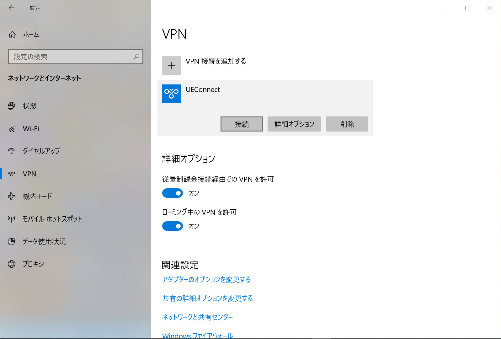

Lunatic電通生もっちゃんの部屋
STEP 5-1 L2TP VPN の設定・使用方法
Windows10の人向けです。
「スタートボタン ⇒ 設定 ⇒ ネットワークとインターネット ⇒ VPN ⇒ VPN接続を追加する」を選んでください。
画像を確認しながら、以下の情報を入力しましょう。事前共有鍵の説明は、箇条書きの下に書かれています。
- 「VPNプロバイダー」は、右の「V」をクリックして「Windows (ビルドイン）」を選択します。
- 「接続名」は、自分がわかる名前を入力してください。
- 「サーバー名またはアドレス」は、
vpn.cc.uec.ac.jpと入力してください。 - 「VPNの種類」は、右の「V」をクリックして「事前共有キーを使った L2TP/IPsec」を選んでください。
- 「事前共有キー」は、下で得られたものを入力してください（他人に見せるの厳禁）
- 「サインイン情報の種類」は「ユーザー名とパスワード」を選択してください。
- 「ユーザー名（オプション）」は、自分のUECアカウント（x20xxxxx）を、「パスワード（オプション）」は自分のパスワードを入力してください。
- 「サインイン情報を保存する」はチェックを入れてください。
事前共有鍵の入手方法は、Firefoxを用いて https://www.cc.uec.ac.jp/in/vpn_key/にアクセスします。 ユーザー名とパスワードを求められるのでUECアカウントとパスワードを入れてください。
使用許諾(product license agreement)が出てくるので絶対に守りましょう。
「同意する」を選択すると、いくつか種類があります。更新日現在は「2019年度 事前共有鍵」を使用してください。そこに書かれている文字列が「事前共有鍵」です。（なお、2020年版はそのうち公開されますので、発行され次第そちらに変更してください。）
これで設定はおしまいです。Powershellを開いていた人は閉じてください。また、Firefoxの設定を戻します。「右上の三 ⇒ オプション ⇒ 一般」を選択し、一番下にある「接続設定」をクリック、「システムのプロキシー設定を使用する」を選んでください。
次に確認方法です。
「スタートボタン ⇒ 設定 ⇒ ネットワークとインターネット ⇒ VPN」と進んで、自分が先ほど決めた「VPNの接続名（例ではUEConnect)」をクリック。「接続」ボタンを押してください。「接続済み」となれば成功です。 https://www.cc.uec.ac.jp/in/にアクセスし、「このページは学内ネットワークからしかアクセスできません． 」と出れば成功です。
ただし、このままでは他のサイトを見ることができないので、一旦「切断」ボタンをおして切断してください。そののち「詳細オプション」を選択してください。
「VPNプロキシ設定」の欄を、画像を見ながら入力してください。
- 「手動セットアップ」を選んでください。
- 「アドレス」は、
proxy.uec.ac.jpを入力してください。 - 「ポート」は
8080です。 - 下のチェックは入れておいたほうが無難です。（任意）
もう一度「接続」すると、好きなサイトを閲覧することができます。
最後に、使用方法と注意点です。
「学外」からアクセスする場合、この方法で「接続」「切断」をしてください。
ただし、大学内で「UECWireless」や「AIA-Wireless」に接続する時は、別途プロキシ設定が必要です。

「スタートボタン ⇒ 設定 ⇒ ネットワークとインターネット ⇒ プロキシ 」を選択。「手動プロキシセットアップ」を選択し、以下のように入力しましょう。
- 「プロキシサーバーを使う」を「ON」にする。
- 「アドレス」欄に、
proxy.uec.ac.jpと入力する。 - 「ポート」は
8080と入力してください。 - チェックはつけて置いた方が無難です。
- 「保存」を押す。
Next -> STEP 6 メールを設定する
※VPNやSSHは必要ありません。